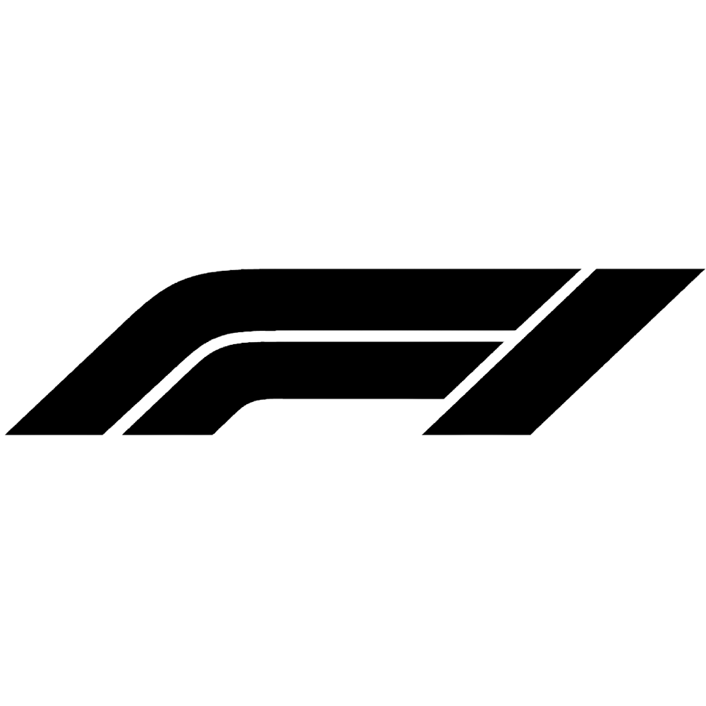

Driver sign in
Use your approved F7R driver account.
Checking connection settings…
Need an account? Ask your F7R admin to create and approve your driver login.

NOT CONNECTEDSign in to see F7R’s shared live race data.
Use your approved F7R driver account.
Checking connection settings…
Need an account? Ask your F7R admin to create and approve your driver login.
The whole grid, together.
Waiting for a receiver
Select a driver to inspect their car
| POS | DRIVER / TEAM | LAP | GAP | LAST LAP | TYRE | ERS / BOOST | FUEL |
|---|
Choose a race to load telemetry.
Select a driver to see car details.
F1 25 · 2026 Season Pack
Enable Your Telemetry: Public and Show online ID / gamertags in your game. Without these, detailed car data or names may be unavailable. Hidden values appear as Private, never as zero.
Run the supplied F7R receiver on a computer connected to a game in the same race lobby. For a console, that computer must be on the console’s local network. The viewing drivers do not each need to run a receiver.
UDP Telemetry: On · UDP Broadcast: Off · UDP Port: 20777 · UDP Format: 2026. Set UDP IP Address to the computer running the receiver.
The dashboard uses names supplied by the game. Where a console or privacy setting hides a name, an F7R admin can assign a name to a verified car slot for that specific race.
Live means recent frames arrived. Stale means the last snapshot is over eight seconds old. A finished race shows its last stored snapshot. Demo mode is always labelled and never uploads data.
Signals apply to every connected F7R driver and the Windows overlay.
Controls use the existing race-control admin permissions.
The Windows overlay receives the same live flags, messages and countdown. Console drivers can view this page on a phone, tablet or computer.
Download Windows flag overlay ↗